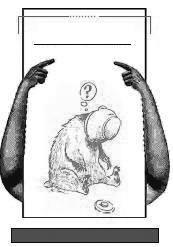

漫画与幽默
冒 险
二战时犹太人遭到越来越残酷的迫害，他们用笑话支撑自己的精神。
莱维和希尔施在非洲丛林里相遇，手里都拿着枪。希尔施问：“你在这儿干什么？”莱维说：“我有一笔象牙生意，我刚打死一头象。你呢？”“我在做鳄鱼皮生意，我刚杀了一条鳄鱼。咱们的好朋友西蒙怎么样了？”
“他现在是真正的探险家。他在柏林。”
胳膊肘的功能
老祖母搬了新家，正在给即将来探望她的孙子打电话，告诉他如何找到所住的公寓。
“你来到楼下的门厅前，会看到大门旁有一块标有各住家号码的门牌板，在上面找到14B，然后用胳膊肘按一按，我会在楼上给你开门的。进到门厅里后，你走进右边的电梯，再用胳膊肘按一按14楼的号码。你走出电梯，找到14B门牌号，最后用胳膊肘按一按我的门铃。”
“奶奶，”孙子不解地问道，“听起来，要找到你住的地方很容易。可为什么你总是要我用胳膊肘做这些事？”
“难道你就空着手来探望我？”老祖母问道。(刘旭东摘)
干净又明亮
父亲走到儿子的房间，夸奖道：“干得好，儿子，窗户干净又明亮，你是用肥皂和水擦的吗？”儿子：“没有，爸爸，我用的是锤子。”
(杨有摘)
转折连词
语文老师让学生用“却”“但是”造句，并解释道：“这两个词都是转折连词。‘却’是小转，像转一个小弯，‘但是’是大转，像转个大弯。”
有学生立即说：“我家到学校只转几个‘却’，而到外婆家要转几个‘但是’。”
船上禁酒
一艘俄罗斯科学考察船在大洋上飘荡了好几个月。海员开始偷偷地喝酒，船长召开大会，决定制止酗酒现象：“为了严肃纪律，我命令，把所有的酒都扔到海里去！”
船舱里变得像基地一样寂静。这时后排有海员喊道：“船长说得对！早就该把所有的酒都扔到海里去了！”
全体船员愤怒了：“这里没你们潜水员说话的份儿！”
(黄利华摘)
花生酱
某人刚到一所小学代课时，学校的主管对他说，任何学生在上课时间都不得离开教室。但有一天，他正要开始上课时，只见莱蒂站起来说：“老师，我得去告诉弟弟，今天中午吃花生酱。”
“哦！我想，它同上课相比，是不重要的吧？”
“不，老师，”莱蒂说，“如果我不告诉弟弟今天中午吃花生酱，他就会把妈妈留给爸爸晚上吃的烤牛肉吃掉。那样，爸爸回来，就会要妈妈辞去她的工作，因为她不能使他吃上好饭。然后，妈妈将和爸爸吵架，让他自己去下馆子，爸爸便很晚很晚才能回家，最后妈妈便叫嚷着要闹离婚，并到外婆家去住了……”
最好的观众
我们7岁的儿子汤姆正要和他父亲一起去看电影，这是他第一次去看电影。这部电影真的催人泪下，因此，我告诫他这部电影非常悲伤。但他并没有被吓倒。当他们回来的时候，我问他有没有哭。
“哭了。”他说道。
“在哪一部分？”我问。
“爸爸不愿意给我买爆米花的那一部分。”
(董行摘)
看菜单
丈夫与妻子坐在海滩上，丈夫戴上墨镜，眼睛却紧紧盯着过往的每一个女人。
“亲爱的，你真不害臊，你已经是有家庭的人了。”妻子说。
“亲爱的，打个比方，我正在节食，并不意味着我就不能看菜单。”快走！